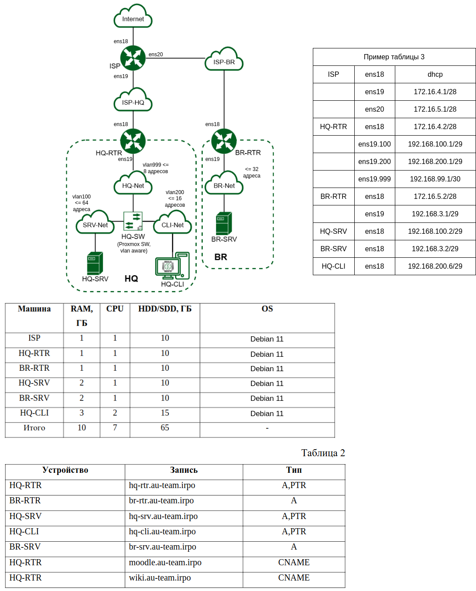
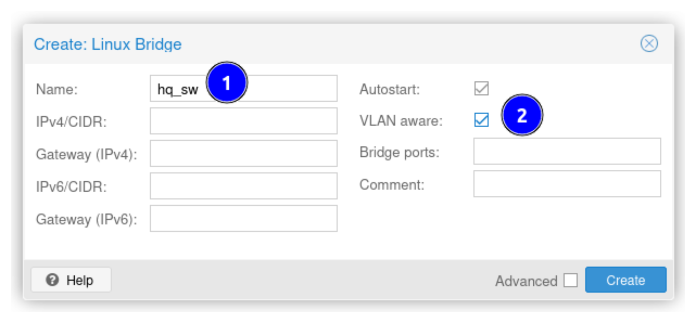
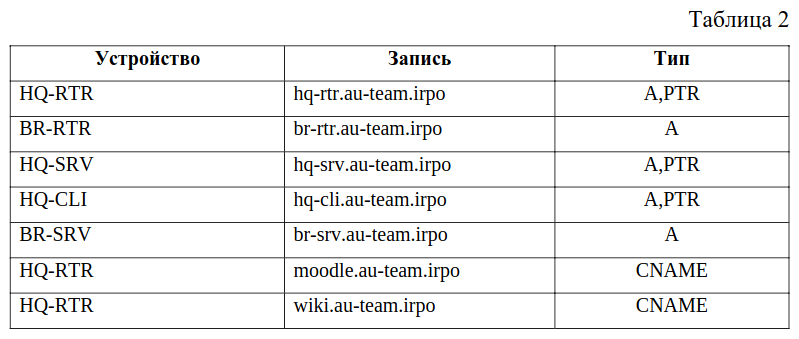

Вариант решения ДЭ 2025 (базовый уровень)
Пользоваться данным сайтом на самом демонстрационном экзамене, вероятно, нельзя. Уточняйте у своей группы экспертов.
üìÅ –ó–∞–¥–∞–Ω–∏–µ (–æ–±—Ä–µ–∑–∞–Ω–Ω—ã–π файл, –≤–∑—è—Ç с оф. —Å–∞–π—Ç–∞)
üìÅ –ü—Ä–∏–ª–æ–∂–µ–Ω–∏–µ (–ø–æ—Ç–µ–Ω—Ü–∏–∞–ª—å–Ω–æ–µ, –≤–∑—è—Ç с оф. —Å–∞–π—Ç–∞)
Введение
Здесь рассматривается один из вариантов решения демоэкзамена Код 09.02.06-1-2025, базовый уровень (только модули 1 и 2).
-
Разные стенды: В модулях используются разные стенды. Сначала будет выдан доступ к стенду модуля 1, а далее по запросу сдающего будет выдан доступ к стенду модуля 2, при этом доступ к стенду модуля 1 будет закрыт.
-
üåê Доступ в Интернет: Как правило, доступ есть, но нельзя нигде логиниться, общаться на форумах, пользоваться мессенджерами и нейросетями. Запросы в поисковой системе должны быть общими, без конкретизации адресов, доменных имен и т.п. Нельзя вводить конкретный URL.
-
Не заучивайте настройки: На самом ДЭ задание может немного отличаться, поэтому не следует заучивать конфигурации и команды - нужно понимать принципы настройки.
-
⚠️ Перезагрузка стенда: После завершения выполнения задания, вам будет необходимо перезагрузить весь стенд. Перезагружать машины можно в том порядке, в каком считаете нужным. Работоспособность решения не должна при этом нарушиться. После окончания нельзя будет вносить какие-либо изменения.
-
Это не идеальное решение: Некоторые приведенные команды могут показаться избыточными. Это сделано намеренно, чтобы указать набор используемых команд. При этом нужно понимать, что делать каждая команда и применять только те, которые необходимы в данный момент.
-
Анализируйте копируемые команды: Будьте аккуратны при выполнении команд, содержащих
cat << EOF > ..., т.к. можно затереть уже имеющиеся настройки. Лучше вручную открывать файл и "копипастом" вставлять текст или вводить вручную. -
Снапшоты: При возможности рекомендуется использовать.
Модуль 1
Немного о стенде
- Все виртуальные машины (VM) созданы путем клонирования.
- Все VM на стенде - Debian 11.11.
- Стенд не преднастроен.
- Часть пакетов предзагружена, но не установлена.
- На VM преднастроен прокси для загрузки пакетов, чтобы ускорить их загрузку и случайно не получить бан по IP из-за массовой одновременной загрузки. Ознакомиться здесь.
-
На клиентской машине нужно включить автозапуск графического окружения. По умолчанию на всех VM графическое окружение не запускается.
cat << EOF >> ~/.xinitrc ... EOF -
Удобный "копипаст": Чтобы можно было использовать копипаст, рекомендуется использовать консоль
xterm.js. Расположение: возле кнопки запуска и остановки VM есть кнопкаConsole, в выпадающем списке есть вариантxterm.js. Работает через контекстное меню. -
Для доступа VM в üåê Интернет (при необходимости) есть два варианта:
-
✅ Рекомендуемый: Настраивать постепенно схему, начиная с ISP, настраивая NAT и маршрутизацию и прочее. По сути выполнять задание, возможно, не в том порядке, котором идут задания. Так вы сразу будете уверены, рабочие настройки или нет.
-
❌ Не рекомендуемый: Подключить VM к бриджу (например,
vmbr0) с доступом в Интернет, но потом не забыть отключить. Способ простой, быстрый, но при этом могут быть неочевидные конфликты конфигураций с заданием.
-
-
Маршрутизация: На всех маршрутизаторах необходимо включить пересылку пакетов. Далее об этом не упоминается.
echo "net.ipv4.ip_forward=1" >> /etc/sysctl.conf sysctl -p -
Интерфейсы и адресация: На рисунке ниже приведены названия интерфейсов и их адреса. Названия интерфейсов на стенде будут по возможности такими же. Адресация может отличаться, если изменится задание. Будьте внимательны.
-
⚠️ Важно! Лучше придерживаться всем одной адресации, путей и прочих параметров, не зафиксированных заданием, чтобы во время подготовки можно было легче найти ошибки, а во время проверки на ДЭ - облегчить жизнь проверяющим. Никто не будет искать то, что лежит в нестандартном месте.
-
Характеристики VM: По умолчанию выставлены необходимые характеристики, но лучше их проверить и изменить при необходимости.

Далее приведено примерное решение заданий и не во всех случаях приведенных конфигураций достаточно.
1. Произведите базовую настройку устройств
Настройте имена устройств согласно топологии. Используйте полное доменное имя.
isp.au-team.irpo
hq-rtr.au-team.irpo
br-rtr.au-team.irpo
hq-srv.au-team.irpo
hq-cli.au-team.irpo
br-srv.au-team.irpo
hostnamectl set-hostname isp.au-team.irpo
Проверка:
hostnamectl status
logout
login
hostnamectl status
Локальная сеть в сторону HQ-SRV (VLAN100) должна вмещать ❗ не более 64 адресов.
Например, 192.168.100.0/29 (255.255.255.248).
8 адресов, 6 - для узлов, этого достаточно для задания.
Локальная сеть в сторону HQ-CLI (VLAN200) должна вмещать ❗ не более 16 адресов.
Например, 192.168.200.0/29 (255.255.255.248).
8 адресов, 6 - для хостов, этого достаточно для задания.
Локальная сеть для управления (VLAN999) должна вмещать ❗ не более 8 адресов.
Например, 192.168.99.0/30 (255.255.255.252).
4 адреса, 2 - для хостов, этого достаточно для задания.
Локальная сеть в сторону BR-SRV должна вмещать ❗ не более 32 адресов.
Например, 192.168.3.0/29 (255.255.255.248).
8 адресов, 6 - для хостов, этого достаточно для задания.
Сведения об адресах занесите в отчёт, в качестве примера используйте Таблицу 3.
Примером таблицы, вероятно, является таблица из Приложения Б, но лучше ❗ спросить на самом экзамене у проверяющих.
2. Настройка ISP
Интерфейс, подключенный к магистральному провайдеру, получает адрес по DHCP.
# /etc/network/interfaces
auto ens18
iface ens18 inet dhcp
systemctl restart networking.service
dhclient
Настройте маршруты по умолчанию там, где это необходимо.
По идее маршрут по умолчанию должен быть автоматически создан после получения адреса по DHCP.
ip route replace default via 192.168.0.1
Проверка
ip route show
ip ro
Интерфейс, к которому подключен HQ-RTR, подключен к сети
172.16.4.0/28.
# /etc/network/interfaces
auto ens19
iface ens19 inet static
address 172.16.4.1/28
Интерфейс, к которому подключен BR-RTR, подключен к сети
172.16.5.0/28.
# /etc/network/interfaces
auto ens20
iface ens20 inet static
address 172.16.5.1/28
На ISP настройте динамическую сетевую трансляцию в сторону HQ-RTR и BR-RTR для доступа к сети Интернет.
# /etc/network/interfaces
# или iptables, iptables-save
auto ens18
iface ens18 inet dhcp
post-up iptables -t nat -I POSTROUTING -o ens18 -j MASQUERADE
post-down iptables -t nat -F
Проверка: маршрутизаторы должны пинговать адреса в Интернете.
3. Создание локальных учетных записей
Создайте пользователя sshuser на серверах ❗ HQ-SRV и BR-SRV. Пароль пользователя sshuser с паролем P@ssw0rd. Идентификатор пользователя 1010. Пользователь sshuser должен иметь возможность запускать sudo без дополнительной аутентификации.
useradd -u 1010 -m -s /bin/bash sshuser
echo sshuser:P@ssw0rd | chpasswd
passwd - изменить пароль.
Свою запись можно создать в отдельном файле.
# visudo /etc/sudoers.d/sshuser
# visudo /etc/sudoers
sshuser ALL=(ALL) NOPASSWD: ALL
Проверка
Войти под созданным пользователем и проверить права.
su - sshuser
sudo -v
sudo nano /etc/hosts
sudo apt update
# или другие команды требующие повышение привилегий
Создайте пользователя net_admin на маршрутизаторах ❗ HQ-RTR и BR-RTR. Пароль пользователя net_admin с паролем ❗P@$$word. При настройке ОС на базе Linux, запускать sudo без дополнительной аутентификации.
Решается по аналогии с прошлым заданием.
useradd -m -s /bin/bash net_admin
echo net_admin:P@$$word | chpasswd
echo "net_admin ALL=(ALL) NOPASSWD: ALL" >> /etc/sudoers.d/net_admin
Обязательно проверить по аналогии с прошлым заданием.
4. Настройте на интерфейсе HQ-RTR в сторону офиса HQ виртуальный коммутатор (⚠️ принцип router-on-a-stick)
Вероятно, данные преднастройки уже будут выполнены. Обязательно нажать после создания на Apply Configuration.

Сервер HQ-SRV должен находиться в ID VLAN 100.
Подключить VM к bridge и назначить vlan.

Клиент HQ-CLI в ID VLAN 200.
По аналогии к HQ-SW подключить HQ-CLI.
Создайте подсеть управления с ID VLAN 999.
К HQ-SW подключить HQ-RTR, но ❗ тег не указывать, т.к. это будет транк.
5. Настройка безопасного удаленного доступа на серверах ❗ HQ-SRV и BR-SRV
Для подключения используйте порт 2024. Разрешите подключения только пользователю sshuser. Ограничьте количество попыток входа до двух. Настройте баннер "Authorized access only".
cat << EOF > /etc/ssh/banner.txt
Authorized access only
EOF
cat << EOF > /etc/ssh/sshd_config.d/demo.conf
Port 2024
AllowUsers sshuser
MaxAuthTries 2
Banner /etc/ssh/banner.txt
EOF
systemctl restart sshd.service
Проверка
Проверить ввод неправильного пароля 2 раза, т.к. ограничение равно 2. Можно также создать тестового пользователя, которому не разрешено подключение. Потом удалить его, или не удалять, если это не противоречит заданию.
ssh -p 2024 sshuser@localhost
Authorized access only
sshuser@localhost's password:
useradd test
passwd test
New password: test
Retype new password: test
passwd: password updated successfully
ssh -p 2024 test@localhost
Authorized access only
test@localhost's password: test
Permission denied, please try again.
test@localhost's password: test
Received disconnect from ::1 port 2024:2: Too many authentication failures
Disconnected from ::1 port 2024
root@hq-srv:~# userdel test
6. Между офисами HQ и BR необходимо сконфигурировать IT-туннель
Сеть для туннельных интерфейсов, например, такая - 192.168.255.0/30. Внести эту информацию в отчет!
ip tunnel add gre1 mode gre remote 172.16.5.2 local 172.16.4.2 ttl 64 dev ens18
ip link set ens18 up
ip addr add 192.168.255.1/30 dev gre1
ip tunnel add gre1 mode gre remote 172.16.4.2 local 172.16.5.2 ttl 64 dev ens18
ip link set ens18 up
ip addr add 192.168.255.2/30 dev gre1
7. Обеспечьте динамическую маршрутизацию
Неявные параметры:
- area 0,
- настраивать только на HQ-RTR и BR-RTR,
- использовать пакет frr,
- защита с помощью MD5,
- пассивные интерфейсы все, кроме туннельных.
# /etc/frr/daemons
ospfd=yes
systemctl restart frr.service
Далее с помощью vtysh настроить OSPF. Сохранить конфигурацию. Должно быть похоже на следующее:
# /etc/frr/frr.conf
!
interface gre1
ip ospf authentication message-digest
ip ospf message-digest-key 1 md5 P@ssw0rd
ip ospf network point-to-point
!
router ospf
passive-interface default
no passive-interface gre1
network 192.168.3.0/29 area 0
network 192.168.255.0/30 area 0
area 0 authentication message-digest
!
# /etc/frr/frr.conf
!
interface gre1
ip ospf authentication message-digest
ip ospf message-digest-key 1 md5 P@ssw0rd
ip ospf network point-to-point
!
router ospf
passive-interface default
no passive-interface gre1
network 192.168.100.0/29 area 0
network 192.168.200.0/29 area 0
network 192.168.99.0/30 area 0
network 192.168.255.0/30 area 0
area 0 authentication message-digest
!
Проверка
root@br-srv:~# traceroute 192.168.100.2
traceroute to 192.168.100.2 (192.168.100.2), 30 hops max, 60 byte packets
1 192.168.3.1 (192.168.3.1) 0.435 ms 0.377 ms 0.405 ms
2 192.168.255.1 (192.168.255.1) 1.521 ms 1.484 ms 1.450 ms
3 192.168.100.2 (192.168.100.2) 1.883 ms 1.902 ms 1.813 ms
8. Настройка динамической трансляции адресов
По аналогии с заданием 2 выполнить настройку правил на HQ-RTR и BR-RTR.
9. Настройка протокола динамической конфигурации хостов
Рекомендуемые параметры:
- Настройте нужную подсеть - 192.168.200.0/29
- Исключите из выдачи адрес маршрутизатора - 192.168.200.1/29
- Адрес шлюза по умолчанию - адрес маршрутизатора HQ-RTR - 192.168.200.1/29
- Адрес DNS-сервера для машины HQ-CLI - адрес сервера HQ-SRV - 192.168.100.2/29
- DNS-суффикс для офисов HQ - au-team.irpo
- Клиентом является машина HQ-CLI
- Использовать dnsmasq
# /etc/dnsmasq.conf
domain=au-team.irpo
interface=ens19.200
dhcp-range=192.168.200.2,192.168.200.6,24h
dhcp-option=1,255.255.255.248
dhcp-option=3,192.168.200.1
dhcp-option=6,192.168.100.2
dhcp-host=<MAC-адрес HQ-CLI>,192.168.200.6
systemctl restart dnsmasq
Список опций DHCP можно изучить, например, здесь.
# /etc/network/interfaces
auto ens18
iface ens18 inet dhcp
Проверка
dhclient
ip a
cat /var/lib/misc/dnsmasq.leases
10. Настройка DNS для офисов HQ и BR
- Основной DNS-сервер реализован на HQ-SRV
- Сервер должен обеспечивать разрешение имён в сетевые адреса устройств и обратно в соответствии с таблицей 2
- В качестве DNS сервера пересылки используйте любой общедоступный DNS сервер
- https://www.zytrax.com/books/dns/ch8/soa.html
- https://www.zytrax.com/books/dns/apa/time.html

Например, общедоступный DNS-сервер - 8.8.8.8.
HQ-SRV
Параметры:
cat << EOF > /etc/bind/named.conf.options
options {
directory "/var/cache/bind";
allow-recursion { any; };
forwarders { 8.8.8.8; };
dnssec-validation auto;
listen-on { 127.0.0.1; 192.168.100.2; };
};
EOF
Пречисление зон:
cat << EOF > /etc/bind/named.conf.local
zone "au-team.irpo" {
type master;
file "/etc/bind/db.au-team.irpo";
};
zone "168.192.in-addr.arpa" {
type master;
file "/etc/bind/db.168.192";
};
EOF
Описание прямой зоны:
$TTL 1d
$ORIGIN au-team.irpo.
@ IN SOA ns admin (
2025010100 ; Serial
1h ; Refresh
1m ; Retry
1d ; Expire
1d ; TTL
)
@ IN NS ns
ns IN A 192.168.100.2
hq-srv IN CNAME ns
hq-rtr IN A 192.168.100.1
hq-rtr IN A 192.168.200.1
hq-rtr IN A 192.168.99.1
br-rtr IN A 192.168.3.1
hq-cli IN A 192.168.200.6
br-srv IN A 192.168.3.2
moodle IN CNAME hq-rtr
wiki IN CNAME hq-rtr
Описание обратной зоны:
TTL 2d
$ORIGIN 168.192.in-addr.arpa.
@ IN SOA ns.au-team.irpo admin.au-team.irpo. (
2025020820 ; Serial
1d ; Refresh
1h ; Retry
1d ; Expire
1d ) ; Negative Cache TTL
;
@ IN NS ns.au-team.irpo.
6.200 IN PTR hq-cli.au-team.irpo.
2.100 IN PTR hq-srv.au-team.irpo.
1.100 IN PTR hq-rtr.au-team.irpo.
1.200 IN PTR hq-rtr.au-team.irpo.
1.99 IN PTR hq-rtr.au-team.irpo.
Проверить и перезагрузить:
named-checkconf
named-checkzone au-team.irpo /etc/bind/db.au-team.irpo
named-checkzone 168.192.in-addr.arpa /etc/bind/db.168.192
systemctl restart bind9
Проверка: на HQ-SRV и HQ-CLI использовать nslookup или dig.
11. Настройте часовой пояс на всех устройствах, согласно месту проведения экзамена
timedatectl set-timezone Europe/Moscow
Проверка
timedatectl status
...
Time zone: Europe/Moscow (MSK, +0300)
...
Модуль 2
⚠️ Еще раз внимание: Важно понимать, что модуль 2 выполняется не совместно с модулем 1. Это будут отдельные преднастроенные машины. Т.е. все, что вы настроили в модуле 1, никак не влияет на начало выполнения модуля 2. Доступ к стенду модуля 2 выдается по запросу, при этом доступ к стенду модуля 1 будет закрыт.
1. Настройте доменный контроллер Samba на машине BR-SRV
üö® Это одно из сложных заданий! Рекомендуется пропустить и выполнять в последнюю очередь. Не факт, что потраченное время будет равносильно количеству полученных баллов.
⚠️ Перед выполнением рекомендуется сделать снапшот, и после - тоже.
üëé Приведенное далее описание - плохой черновик. По приведенным на оф. документацию ссылкам реально выполнить задание, но документация достаточно запутанная, учитывая, что она еще на английском.
✅ Если несколько раз прорешать, то все получится.
Вспомогательные ссылки:
- Взаимоотношения dhcpclient и resolv.conf'а в Linux
- Samba AD
- Настройка Kerberos-аутентификации
- samba-tool
- Sudoers Policies
BR-SRV
resolveconf --disable-updates
mv /etc/samba/smb.conf{,.backup}
smbd -b | egrep "LOCKDIR|STATEDIR|CACHEDIR|PRIVATE_DIR"
rm -rf /run/samba/*
rm -rf /var/lib/samba/*
rm -rf /var/cache/samba/*
# mkdir -p /var/cache/samba
# mkdir -p /var/lib/samba/private
cat << EOF > /etc/resolve.conf
search au-team.irpo
nameserver 127.0.0.1
EOF
samba-tool domain provision --server-role=dc --use-rfc2307 --dns-backend=SAMBA_INTERNAL --realm=AU-TEAM.IRPO --domain=AU-TEAM --adminpass=P@ssw0rd
systemctl start named
mv /etc/krb5.conf{,.backup}
cp /var/lib/samba/private/krb5.conf /etc/krb5.conf
testparm
samba
samba-tool dns zonecreate br-srv.au-team.irpo 3.168.192.in-addr.arpa -U Administrator
samba-tool dns add br-srv.au-team.irpo 3.168.192.in-addr.arpa 2 PTR br-srv.au-team.irpo -U Administrator
samba-tool group add hq
for i in {1..5}; do samba-tool user create user$i P@ssw0rd; done
for i in {1..5}; do samba-tool group addmembers hq user$i; done
⚠️ Не описано, как настроить sudoers для домена. См. ссылки выше.
HQ-CLI
Доп. ссылка: Samba as a Domain Member
net ads info
Вход в систему под доменным пользователем
Доп. ссылка: Samba PAM
root@hq-cli:~# apt install libpam-winbind
root@hq-cli:~# find / -type f -name pam_winbind.so
/usr/lib/x86_64-linux-gnu/security/pam_winbind.so
# Не выполнять, если файл уже на месте!
root@hq-cli:~# ln -s /usr/local/samba/lib/security/pam_winbind.so /lib/x86_64-linux-gnu/security/
Далее должен работать su, ssh, login под доменным пользователем.
Проверка
samba-tool group list | grep hq
samba-tool user list | grep user
user@hq-cli:~$ kinit user1
Password for user1@AU-TEAM.IRPO:
Warning: Your password will expire in 41 days on Wed 26 Mar 2025 10:25:14 PM MSK
user@hq-cli:~$ klist
Ticket cache: FILE:/tmp/krb5cc_1000
Default principal: user1@AU-TEAM.IRPO
2. Сконфигурируйте файловое хранилище
При помощи трёх дополнительных дисков, размером 1 Гб каждый, на HQ-SRV сконфигурируйте дисковый массив уровня 5. Имя устройства – md0, конфигурация массива размещается в файле /etc/mdadm.conf. Обеспечьте автоматическое монтирование в папку /raid5. Создайте раздел, отформатируйте раздел, в качестве файловой системы используйте ext4.
Создать через веб-консоль еще 3 диска по 1 ГБ.
Убедиться, что диски есть и посмотреть их имена:
lsblk
Создать raid:
mdadm --create /dev/md0 --level=5 --raid-devices=3 /dev/sdb /dev/sdc /dev/sdd
Посмотреть информацию о raid:
root@hq-srv:~# mdadm --detail /dev/md0
/dev/md0:
...
Raid Level : raid5
Raid Devices : 3
UUID : 9eee4466:2a562fe4:f0a4cea5:ab814e87
...
Сохранить конфигурацию в файл:
root@hq-srv:~# mdadm --detail --scan | tee /etc/mdadm/mdadm.conf
ARRAY /dev/md0 metadata=1.2 name=hq-srv.au-team.irpo:0 UUID=9eee4466:2a562fe4:f0a4cea5:ab814e87
root@hq-srv:~# cat /etc/mdadm.conf
ARRAY /dev/md0 metadata=1.2 name=hq-srv.au-team.irpo:0 UUID=9eee4466:2a562fe4:f0a4cea5:ab814e87
cp /etc/mdadm/mdadm.conf /etc/mdadm.conf
update-initramfs -u
Создание файловой системы:
mkfs.ext4 /dev/md0
Поиск UUID для fstab:
root@hq-srv:~# blkid
...
/dev/md0: UUID="fcbd9e71-1d2b-4c67-b2bb-36a53add0b91" BLOCK_SIZE="4096" TYPE="ext4"
...
echo "UUID=fcbd9e71-1d2b-4c67-b2bb-36a53add0b91 /raid ext4 defaults 0 0" >> /etc/fstab
root@hq-srv:~# mount -a
mount: /raid: mount point does not exist.
root@hq-srv:~# mkdir /raid
root@hq-srv:~# mount -a
root@hq-srv:~# ls /raid/
lost+found
root@hq-srv:~# df -h /raid/
Filesystem Size Used Avail Use% Mounted on
/dev/md0 2.0G 24K 1.9G 1% /raid
Удалить raid (не по заданию, а на всякий случай):
mdadm --stop /dev/md0
mdadm --zero-superblock /dev/md0
update-initramfs -u
# удалить из fstab
Настройте сервер сетевой файловой системы(nfs), в качестве папки общего доступа выберите /raid5/nfs, доступ для чтения и записи для всей сети в сторону HQ-CLI.
HQ-SRV
mkdir /raid/nfs
echo "/raid/nfs 192.168.200.0/29(rw,sync,crossmnt,fsid=0,no_subtree_check,wdelay,all_squash)" >> /etc/exports
systemctl restart nfs-server.service
На HQ-CLI настройте автомонтирование в папку /mnt/nfs.
HQ-CLI
mkdir /mnt/nfs
echo "192.168.100.2:/nfs /mnt/nfs nfs4 defaults 0 0" >> /etc/fstab
mount -a
Проверка
root@hq-srv:~# touch /raid/nfs/demo.txt
root@hq-cli:~# ls /mnt/nfs/
demo.txt
3. Настройте службу сетевого времени на базе сервиса chrony
Доп. ссылки: chrony.conf, pools.
cat << EOF > /etc/chrony/conf.d/demo.conf
#pool ru.pool.ntp.org iburst maxsources 3
bindaddress 192.168.100.1
local stratum 5
allow all
EOF
systemctl restart chronyd
chronyc sources -v
chronyc tracking
/etc/chrony/chrony.conf
server 192.168.100.1 iburst
#pool 2.debian.pool.ntp.org iburst
systemctl restart chronyd
Проверка
chronyc sources -v
chronyc tracking
Еще вариант проверки
На сервере:
timedatectl set-ntp false
timedatectl set-time "2010-01-01 12:00:00"
timedatectl set-ntp true
systemctl restart chronyd
На клиенте:
systemctl restart chronyd
chronyc sources -v
chronyc tracking
4. Сконфигурируйте ansible на сервере BR-SRV
Подготовка BR-SRV
apt install python3-pip sshpass
pip install ansible-core
# или
python3 -m pip install ansible-core
ansible --version
Сформируйте файл инвентаря, в инвентарь должны входить HQ-SRV, HQ-CLI, HQ-RTR и BR-RTR.
⚠️ По умолчанию под рутом запрещено подключение по ssh. Либо изменить права в sshd_config, либо создать пользователя, например sshuser, либо воспользоваться пользователем user, который по умолчанию есть.
cat << EOF > /etc/ansible/hosts
hq-srv.au-team.irpo ansible_port=2024 ansible_user=sshuser ansible_password=P@ssw0rd
hq-cli.au-team.irpo ansible_user=user ansible_password=user
hq-rtr.au-team.irpo ansible_user=user ansible_password=user
br-rtr.au-team.irpo ansible_user=user ansible_password=user
EOF
⚠️ Если доступ устройств по DNS-именам не работает, укажите IP-адреса устройств.
Рабочий каталог ansible должен располагаться в /etc/ansible.
По умолчанию ansible может найти информацию оттуда. Возможно, потребуется создать эту директорию после установки ansible.
https://docs.ansible.com/ansible/latest/reference_appendices/config.html
Все указанные машины должны без предупреждений и ошибок отвечать pong на команду ping в ansible посланную с BR-SRV.
https://docs.ansible.com/ansible/latest/reference_appendices/interpreter_discovery.html
cat << EOF > /etc/ansible/ansible.cfg
[defaults]
interpreter_python = auto_silent
host_key_checking = False
EOF
Все указанные машины должны без предупреждений и ошибок отвечать pong на команду ping в ansible посланную с BR-SRV.
root@br-srv:~# ansible all -m ping
hq-srv.au-team.irpo | SUCCESS => {
"ansible_facts": {
"discovered_interpreter_python": "/usr/bin/python3"
},
"changed": false,
"ping": "pong"
}
hq-cli.au-team.irpo | SUCCESS => {
"ansible_facts": {
"discovered_interpreter_python": "/usr/bin/python3"
},
"changed": false,
"ping": "pong"
}
hq-rtr.au-team.irpo | SUCCESS => {
"ansible_facts": {
"discovered_interpreter_python": "/usr/bin/python3"
},
"changed": false,
"ping": "pong"
}
br-rtr.au-team.irpo | SUCCESS => {
"ansible_facts": {
"discovered_interpreter_python": "/usr/bin/python3"
},
"changed": false,
"ping": "pong"
}
5. Развертывание приложений в Docker на сервере BR-SRV
Установка Docker на Debain
apt-get install ca-certificates curl
install -m 0755 -d /etc/apt/keyrings
curl -fsSL https://download.docker.com/linux/debian/gpg -o /etc/apt/keyrings/docker.asc
chmod a+r /etc/apt/keyrings/docker.asc
echo \
"deb [arch=$(dpkg --print-architecture) signed-by=/etc/apt/keyrings/docker.asc] https://download.docker.com/linux/debian \
$(. /etc/os-release && echo "$VERSION_CODENAME") stable" | \
sudo tee /etc/apt/sources.list.d/docker.list > /dev/null
apt-get update
apt-get install docker-ce docker-ce-cli containerd.io docker-buildx-plugin docker-compose-plugin
docker run hello-world
Docker Compose файл для Media Wiki
cat << EOF > ~/wiki.yml
services:
mediawiki:
container_name: wiki
image: mediawiki
restart: always
ports:
- 8080:80
depends_on:
- database
volumes:
- images_volume:/var/www/html/images
#- ./LocalSettings.php:/var/www/html/LocalSettings.php
database:
container_name: mariadb
image: mariadb
environment:
MYSQL_DATABASE: mediawiki
MYSQL_USER: wiki
MYSQL_PASSWORD: WikiP@ssw0rd
MYSQL_RANDOM_ROOT_PASSWORD: 'yes'
volumes:
- db_volume:/var/lib/mysql
volumes:
db_volume:
images_volume:
EOF
docker compose -f wiki.yml up -d
Пройти через этап установки. В качестве адреса БД использовать имя контейнера с БД - database. Будет скачан файл LocalSettings.php. Перенести его на BR-SRV любым доступным способом. Раскоментировать в wiki.yml volume для LocalSettings.php.
docker compose -f wiki.yml up -d
Открыть сайт по адресу 192.168.3.2. Готово.
6. На маршрутизаторах сконфигурируйте статическую трансляцию портов
Пробросьте порт 80 в порт 8080 на BR-SRV на маршрутизаторе BR-RTR, для обеспечения работы сервиса wiki.
BR-RTR
iptables -t nat -A PREROUTING -p tcp -i ens18 --dport 80 -j DNAT --to-destination 192.168.3.2:8080
BR-SRV
В файле LocalSettings.php заменить адрес на 172.16.5.2 - параметр $wgServer.
Пробросьте порт 2024 в порт 2024 на HQ-SRV на маршрутизаторе HQ-RTR.
iptables -t nat -A PREROUTING -p tcp -i ens18 --dport 2024 -j DNAT --to-destination 192.168.100.2:2024
Пробросьте порт 2024 в порт 2024 на BR-SRV на маршрутизаторе BR-RTR.
iptables -t nat -A PREROUTING -p tcp -i ens18 --dport 2024 -j DNAT --to-destination 192.168.3.2:2024
7. Запустите сервис moodle на сервере HQ-SRV
Используйте Docker Compose по аналогии с MediaWiki.
8. Настройте веб-сервер nginx как обратный прокси-сервер на HQ-RTR
См. оф. документацию или здесь.
9. Удобным способом установите приложение Яндекс Браузере ⚠️ для организаций на HQ-CLI
Судя по информации на сайте браузера, там необходима регистрация. Можно спросить у проверяющих, устроит ли их вариант установки обычного Яндекс Браузера.
Научиться устанавливать обычный Яндекс Бразуер. Изучить, как потенциально устанавлиавать версию "для организаций".